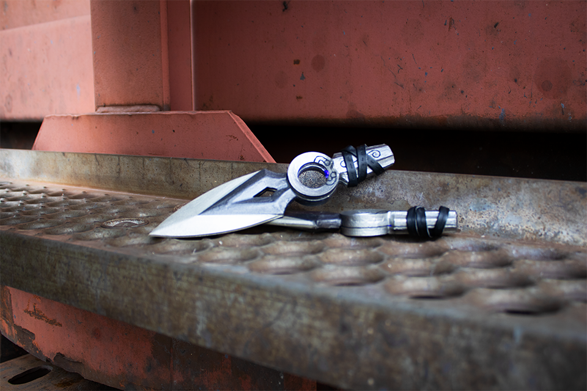

Cosplay / Material Design
Prop Design Project
Notion DocumentationFor the final project of my material design class, we had the great opportunity to create a fun cosplay for any character we wanted. Along the way I had many struggles working hands on with products and crafting but overall the experience was amazing.
My team had chosen Jett from the popular FPS game VALORANT. We really liked her look and style in the game. As a team of 4, we made Jett's Kunais, a vandal gun, her cropped vest, and her belt.
Project
SFU SIAT 336 - Material Design
Project Members
Krista M., Natalie B., Grace L. & Emily L.
Timeline
5 weeks // Summer 2021
Tools
Our hands, Blender 3D, Cura
My Roles
3D Design, Character research, Model Making
Working Hands on
This project was my first time using the 3D printer at school. It was also the first time working with mayh different materials like EVA foam. Throughout the process, I learnt that it is important to do ample research on material and test different products together before trying it on the finish materials. For more in depth break down of the cosplay pieces and my parts please look at the Notion Documentation. I worked mainly on the Kunai knives, from design, protyping and finish product. I also assisted my teams whenever needed.

- 


Presentation
For our final presentation we wanted our audience to feel like they were going through the official VALORANT website pages by adding elements that were similar to VALORANT. note: the figma presentation contains scrolling element on some pages.
Links to our project content: Notion Process Documentation & Final Product Posters